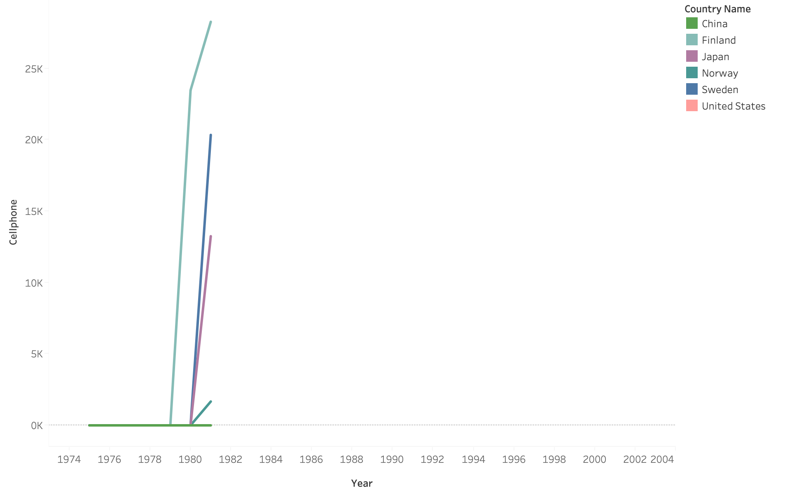
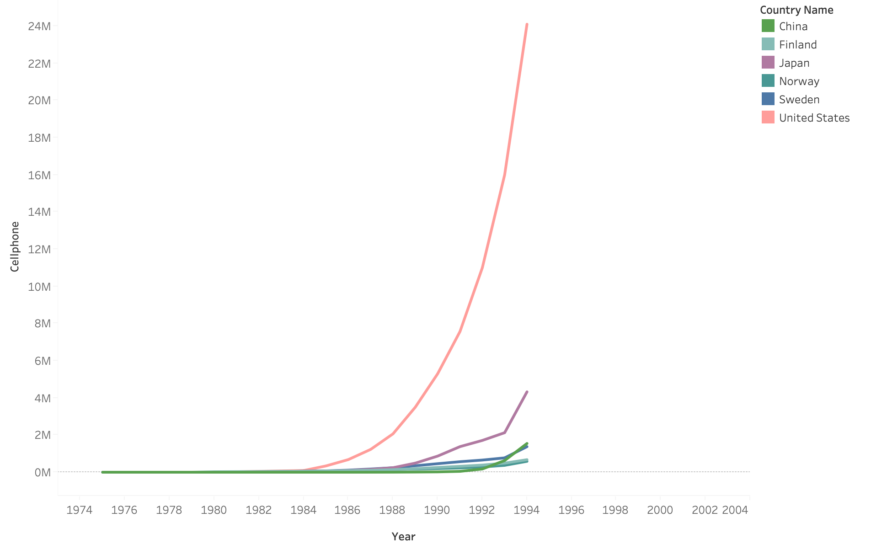
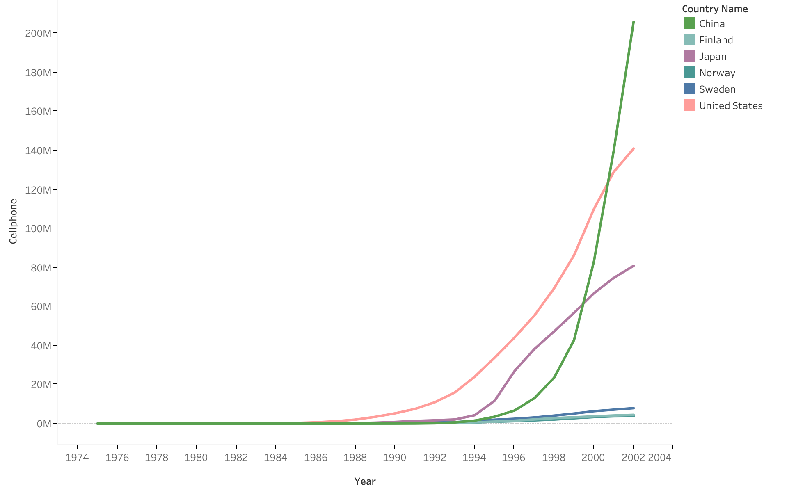

1876
Invention of the Telephone
1876 saw the invention of the telephone by Alexander Graham Bell in the USA, who later visited
Japan personally in 1877 to demonstrate the technology. [2]
From 1876, the USA led the world in telephone use, reaching as many as 180 million telephones in 1980
while the rest of the world adopted telephones much more slowly. In particular, Japan had
the next most telephones, at 48 million when the U.S. reached its peak.
Please note these graphs are NOT real yet!! See our presentation for what the plan is

1896
Invention of the Radio
Radio was patented in 1896 by Guglielmo Marconi, and the world began to develop applications for
this novel long-range communication technology. In particular, the 1910s saw the development
of entertainment broadcast stations, radio communications for aircraft, and even the early stages
of television, using radio to broadcast images.

1990
Japan and China Surge Forward with Telephones
China saw a massive influx of telephone acquisition in 1990,
coinciding with ${POLITICAL EVENT}. [3] Thus, a new trend in communications technology
emerged, where (detailed description of trend changes)

1991
The Fall of the USSR
The fall of the USSR in 1991 causes a distinct anomaly in the trend of world superpowers dominating
technology acquisition. The USSR's radio usage drastically falls post-1990, coinciding with a jump
upwards in China's usage.

To be continued
There's more data that we will organize into a more focused narrative.